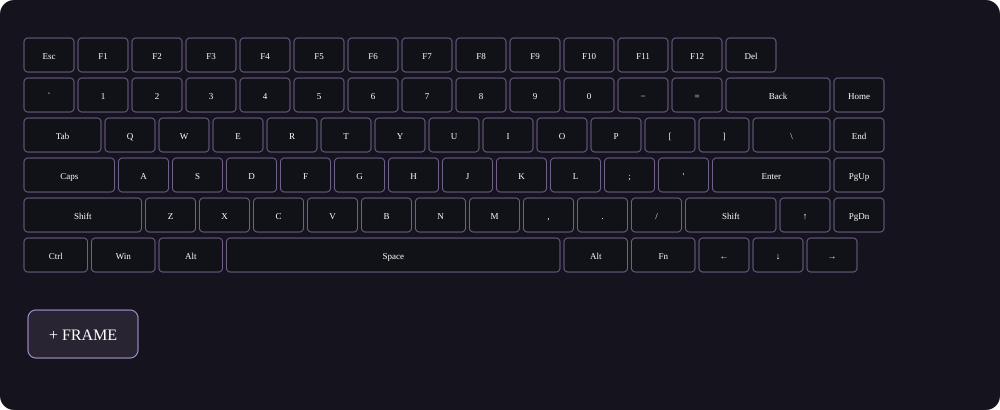
Начни с пустого кадра
Открой конструктор → «Новый проект». Выбери «Свои кадры». Не путай выбор клавиш для рисования с областью анимации: сначала нажми «Все», затем «Анимировать все».
Готовые анимации для CIDOO RGB Studio. Скачай JSON, открой его в конструкторе и измени под свою клавиатуру.
Как рисовать анимации ↓ Смотреть анимации ↓Превью может отображаться криво — для точного результата открой анимацию в конструкторе.
Ничего не найдено. Попробуй другое слово.
Картинки ниже — учебная схема. Повтори шаги в конструкторе; разрешение клавиатуры для предпросмотра не нужно.

Открой конструктор → «Новый проект». Выбери «Свои кадры». Не путай выбор клавиш для рисования с областью анимации: сначала нажми «Все», затем «Анимировать все».
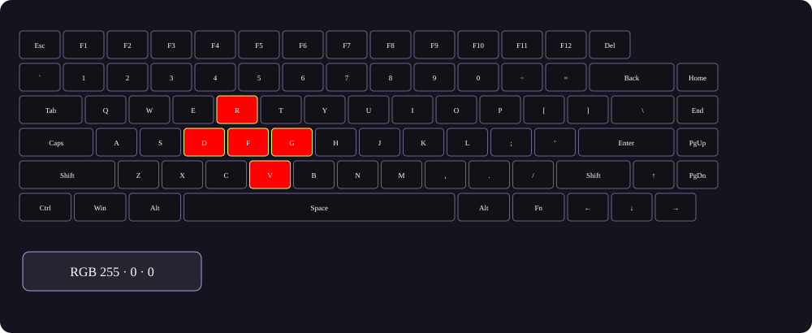
Выбери клавиши на схеме, укажи цвет и нажми «Залить выбранные». Например, нарисуй красный крест из пяти клавиш. Чёрный RGB 0, 0, 0 выключает свет на этих клавишах.
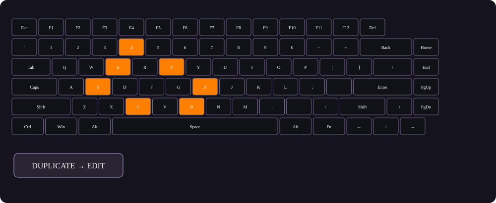
Нажми «Дублировать». Во втором кадре убери центр чёрным цветом, а рядом добавь оранжевые клавиши. Первый кадр останется прежним. Так форма начинает двигаться.
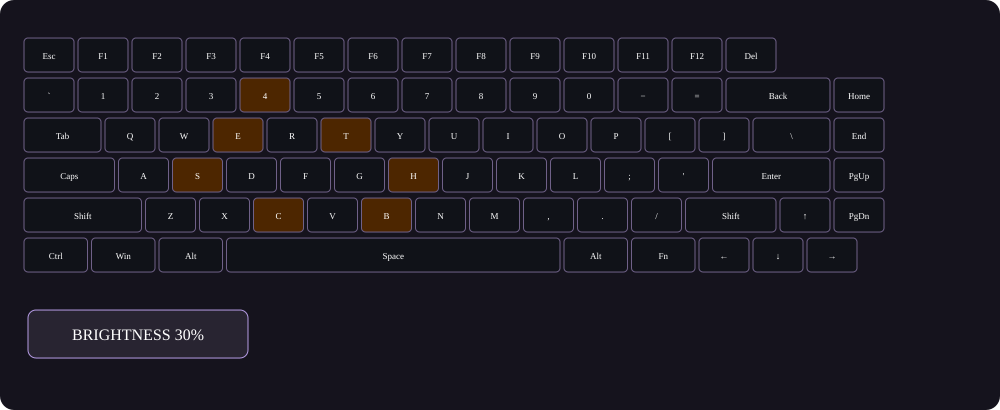
Сделай третий кадр темнее: «Яркость исходника» → 30% → «Применить яркость». Для четвёртого кадра выбери все клавиши и залей чёрным. Получится вспышка → расширение → затухание → пауза.
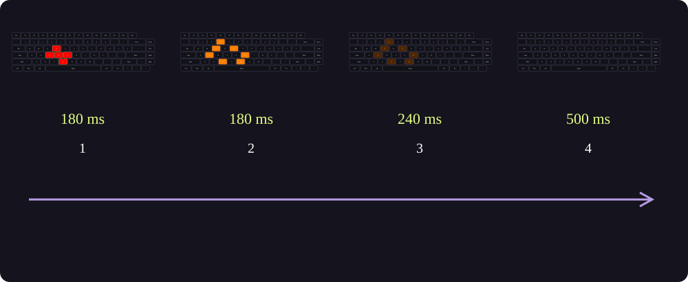
Для примера задай 180 / 180 / 240 / 500 мс. «Плавные» переходы смешивают кадры, «Ступенчатые» меняют их резко. Скорость меняет весь цикл. Нажми «Предпросмотр» — он меняет только экран.
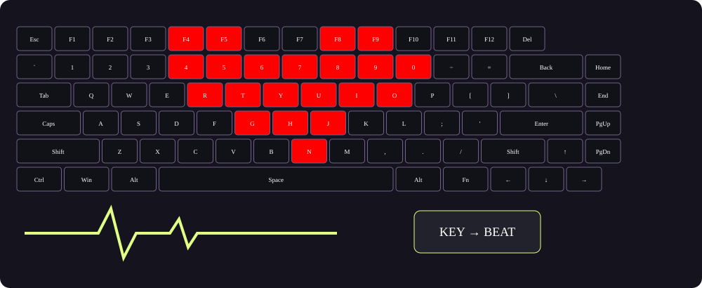
В «Реакция на нажатия» выбери «Биение от нажатия». Оно использует исходный рисунок, а не проигрывает нарисованные кадры: для своего рисунка сохрани его в Layer 1 на сайте CIDOO и считай слой. «Нижняя яркость» задаёт покой, «Пик» — максимум, «Затухание» — длительность удара, «Сила» — интенсивность. Layer 1 расширение не изменяет.
Выбери шаблон или включи режим реакции для своего проекта. Клавиша запускает движение; без новых нажатий эффект заканчивается.
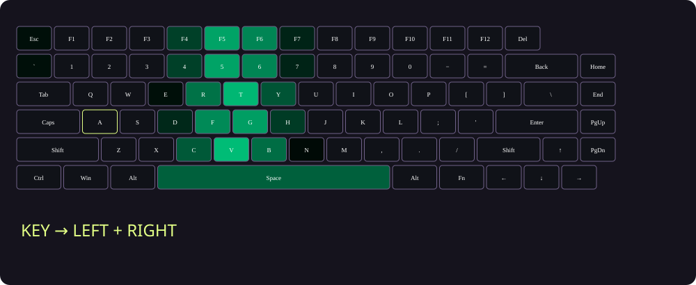
«Направленная волна» идёт от нажатой клавиши вправо, влево, вверх, вниз или в обе стороны. Скорость движения задаёт расстояние в секунду, длина следа — ширину полосы, затухание — время жизни. «Крест» расходится одновременно по строке и колонке.
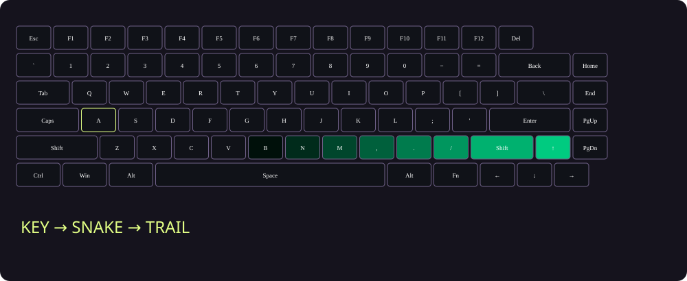
Вправо и влево — проход по рядам, вверх и вниз — по колонкам. Змейка стартует от нажатой клавиши и обходит раскладку. Длина следа задаёт хвост в клавишах. Для быстрого движения выбери 12–20 кадров в секунду. Цвет и сила меняют яркость следа.
Нарисуй несколько кадров, как в шагах выше. Первый кадр сделай состоянием покоя. Выбери «Мои кадры по нажатию» и нажми «Предпросмотр». Включи «Проверять нажатия на схеме» и нажми клавишу: последовательность пройдёт один раз. «Начать заново» перезапускает её при печати, «Дождаться конца» игнорирует новые нажатия до завершения. Длительность задаётся кадрами и общей скоростью; поле затухания здесь не используется.
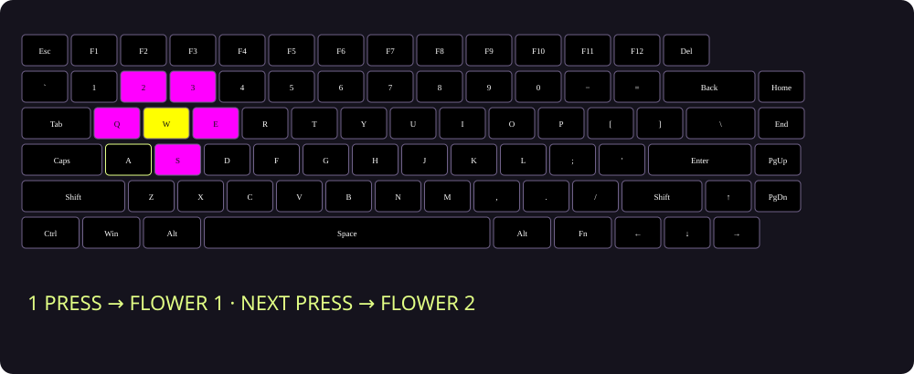
Выдели первый цветок → «Добавить выбранные как группу». Повтори для остальных. Выбери «Биение от нажатия», включи «Группы по очереди». Первое нажатие запускает группу 1, второе группу 2. В шаблоне всё уже готово. Нижняя яркость 0 даёт чёрный фон. Быстрые вспышки могут перекрываться.
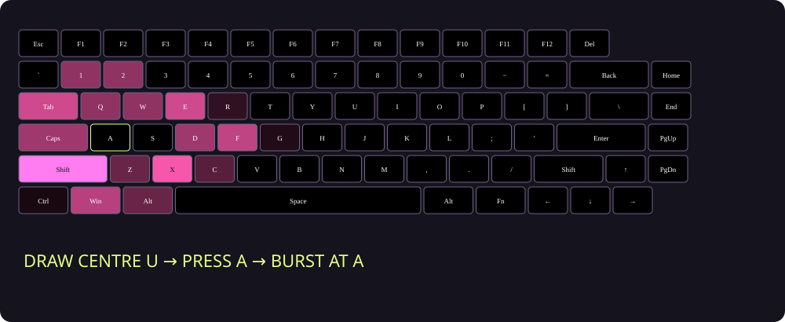
Первый кадр — чёрный покой, следующие — вспышка, расширение, затухание. Выбери «Мои кадры по нажатию» → «От нажатой клавиши». В «Центре рисунка» укажи клавишу, вокруг которой рисовал. Теперь центр переносится к каждой нажатой кнопке; края обрезаются. «На месте рисунка» сохраняет прежнее поведение. Крест и волна всегда начинаются от нажатой кнопки.
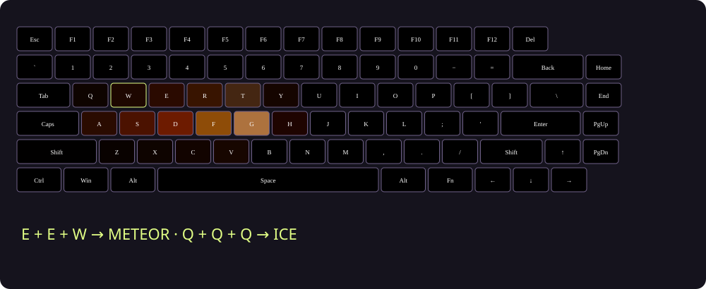
Открой раздел правил, введи Q или E E W. Выбери ответ: шаблон или «Текущий проект» — копию своих кадров. Добавь правило и включи правила. Можно выключить обычную реакцию остальных клавиш. Комбинации вводятся за выбранное окно 0,2–5 секунд, до 4 клавиш. Это последовательный ввод, не удержание одновременно. Шаблон Invoker содержит все 10 заклинаний и 27 вариантов ввода. Реакция работает только в конструкторе и подключённых вкладках Chrome.
Предложи JSON прямо здесь. После проверки анимация появится в коллекции.